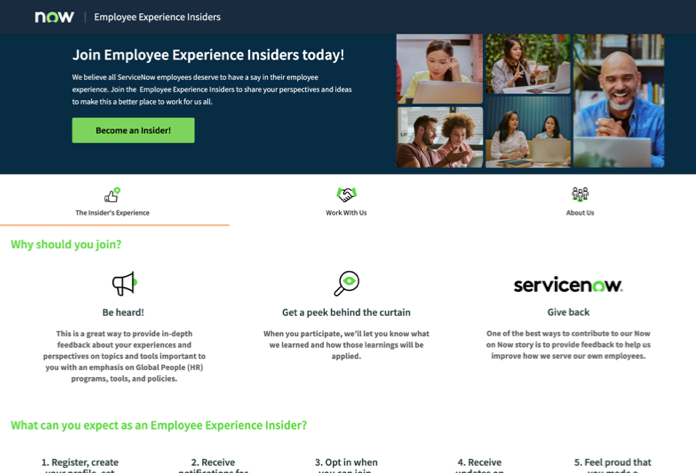

1. CONTEXT
According to the Society for Human Resource Management (SHRM), replacing an employee can cost between 50% and 200% of their annual salary, depending on their level. In addition to headcount cost, turnover can leave knowledge gaps, disrupt innovation, stall teams, and fracture culture. So it is imperative to hold on to good talent. One tool large enterprises like Nike and ServiceNow use to understand employee sentiment and flight risk is an annual employee voice survey (EVS). When done well, these surveys excel at identifying what's working, what isn't, and what shifts year over year. Corporations leverage this data, among other inputs, to keep a pulse on turnover and human capital costs.
2. SITUATION
However, knowing that something is wrong isn't the same as knowing why or how to fix it. To earn and keep employee trust, these companies need to address the issues employees are flagging in the EVS, but the surveys leave a gap in understanding root causes of issues and nuanced sentiment behind a score. At Nike, I set the strategy and led the team that built Employee Experience Insiders, an employee panel that sourced qualitative insights informing decisions for 75,000+ employees. Years later at ServiceNow, when the need resurfaced, I built the same model myself end to end, and again delivered HR leaders and product teams the actionable, data-driven insights they needed to move their work forward with precision.
3. APPROACH
In both cases, the need surfaced organically. HR leaders were asking the same questions and running into the same barriers. "Why did the score drop?" "What is this number telling us?" "This isn't changing. What can we do about it?" The questions always pointed to the need to dig deeper with qualitative questions and rich conversations.
At Nike, the Human Resources Business Partners (HRBPs) care deeply about the organizations they serve, as they should. They take ownership of nurturing the leaders and people in those orgs by being the point of contact between them and HR. So it's understandable that the HRBPs might be sensitive to researchers asking questions and potentially implying outcomes that the HRBPs couldn't support. This dynamic, however, posed challenges, particularly when my team needed to solicit authentic employee voices so we could better understand root causes of EVS scores. HRBPs wanted to personally select employees to participate in our research, which could lead to biased findings.
To protect the integrity of our work, I met with HR leadership and the HRBPs to come to an agreement: my team did not need to seek sign-off to conduct research among employees who 1) were not on a performance plan, and 2) opted in to participate in research. The opt-in opened the door for us to leverage a common tactic in consumer research: the research panel. That gave birth to the Employee Experience Insiders. Having identified the strategic need and the tactical opening to reach employees, my team had clarity to execute and they rose to the occasion. In short order, we had our operating model, complete with internal outreach site, registration workflow, communications templates, and research SOPs. A year after launch, the team had recruited over 700 Insiders and supported over 30 studies per year—a volume and velocity that would not have been possible otherwise.
Years later, as Director of Employee Experience at ServiceNow, the pattern repeated. I was hearing the same questions in the same context. Rather than reinvent the wheel, I leveraged what worked at Nike and recreated it at ServiceNow as a team of one, using our no-code/low-code tools. Within a couple of months, panel participants were providing insights into key employee moments such as onboarding, performance assessment, goal-creation, learning and development, and offboarding.
Here are some factors that made building this qualitative capability successful:
- Employees want to be heard. With Experience Insiders, employees felt like they belonged to something that improved how they and their co-workers experience the workplace. We closed the loop with them after every activity so they knew their input was making a difference.
- A known panel improved our ability to make connections that purely anonymous data couldn't. It also enabled us to understand how changes over time affected the same people. When necessary, we could cross-check with data from random stratified samples.
- At Nike and ServiceNow, a major speed bottleneck was employee access. Employee contact at times had to route through HRBPs as gatekeepers. Panelists who'd opted in directly could be reached without that approval step, and that single change was a major win.

Experience Insiders microsite conveys employee value
4. OUTCOMES
Replaced a one-time annual snapshot with a standing, known panel that could be re-engaged over time. Closing the loop by reporting findings back to participants built trust and kept response rates high. In both cases, HR had a new way to sense and serve employees.
700+
Volunteers recruited and screened across 25 countries for Nike's Experience Insiders panel.
30+ / yr
Studies run on the standing panel annually, without rebuilding recruitment each time.
75%
Cut in time-to-insight at ServiceNow's EX Insiders, driven mainly by removing the HRBP access gate.